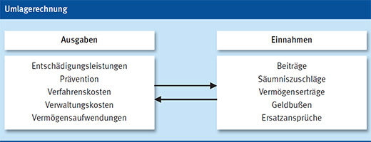

Mitgliedschaft und Finanzierung
|
|

Mitgliedschaft
- Einer Berufsgenossenschaft zugehörig sind Unternehmen und deren Unternehmer und Unternehmerinnen. Wegen der fachlichen Gliederung der gewerblichen Berufsgenossenschaften richtet sich die Zugehörigkeit nach Art und Gegenstand des Unternehmens. Dabei handelt es sich um eine gesetzlich geregelte Mitgliedschaft, die automatisch mit der Eröffnung eines Unternehmens oder den vorbereitenden Arbeiten dazu beginnt und nicht vom Willen des Unternehmers/der Unternehmerin abhängig ist.
Hierbei ist Folgendes zu beachten:
- die Mitgliedschaft bei der Berufsgenossenschaft beginnt spätestens mit der Eröffnung des Unternehmens,
- die Eröffnung hat der Unternehmer/die Unternehmerin der Berufsgenossenschaft innerhalb einer Woche anzuzeigen,
- Änderungen im Unternehmen – Einstellung, Unternehmerwechsel, Änderung des Gewerbezweiges – sind binnen vier Wochen anzuzeigen,
- der Unternehmer/die Unternehmerin erhält einen Zuständigkeitsbescheid und einen Bescheid über die Veranlagung des Unternehmens zu den Gefahrklassen des Gefahrtarifes,
- die in dem Unternehmen tätigen Versicherten sind darüber zu informieren, welche Berufsgenossenschaft für das Unternehmen zuständig ist.
Finanzierung
- Die erforderlichen Mittel für die Leistungen der Unfallversicherung haben ausschließlich die Unternehmer/Unternehmerinnen aufzubringen. Diese Regelung beruht auf dem Prinzip der Ablösung der Unternehmerhaftpflicht, d. h. die gesetzliche Unfallversicherung befreit den Unternehmer/die Unternehmerin von zivilrechtlichen Ansprüchen der Arbeitnehmer bei Arbeits- und Wegeunfällen sowie Berufskrankheiten.
- Arbeitnehmer/Arbeitnehmerinnen zahlen keinen Beitrag und dürfen hiermit auch nicht belastet werden.
- Der Beitrag zur gesetzlichen Unfallversicherung wird im Umlageverfahren nach dem Prinzip der nachträglichen Bedarfsdeckung erhoben, d. h. die Berufsgenossenschaft legt ihren Finanzbedarf nach Abschluss des Kalenderjahres auf ihre Mitglieder um. Sie darf dabei keine Gewinne erzielen, sondern nur die notwendigen Aufwendungen decken. Zur Zwischenfinanzierung werden während des laufenden Jahres Vorschüsse auf den voraussichtlichen Beitrag erhoben.
- Grundlage für die Berechnung der Beiträge sind die gezahlten Arbeitsentgelte eines Kalenderjahres sowie die veranlagte Gefahrklasse und der festgesetzte Beitragsfuß. Bei der Berechnung spiegelt die Gefahrklasse das Unfall- und Berufskrankheitenrisiko des einzelnen Gewerbezweiges wider. Unternehmen mit einer höheren Gefahrklasse haben dementsprechend einen höheren Beitrag zu zahlen. Auf dieser Grundlage werden auch die Beiträge zur Lastenverteilung nach Neurenten ermittelt.
- Die Lastenverteilung nach Entgelten hingegen wird gefahrklassenunabhängig nur auf Basis der Arbeitsentgelte berechnet. Es werden nur Arbeitsentgelte berücksichtigt, die den jährlichen Freibetrag überschreiten.
- Darüber hinaus erhebt die Berufsgenossenschaft der Bauwirtschaft Beitragszuschläge für Unternehmen, deren Unfallbelastung über der durchschnittlichen Unfallbelastung aller Unternehmen liegt.
- Zur Durchführung der Umlagerechnung und Feststellung des Einzelbeitrages hat der Unternehmer/die Unternehmerin
- Lohnlisten mit den Namen der Beschäftigten, den geleisteten Arbeitsstunden und dem verdienten Arbeitsentgelt zu führen,
- das Entgelt personenbezogen nach dem DEÜV-Meldeverfahren der Einzugsstelle mitzuteilen. Zusätzlich ist innerhalb von 6 Wochen nach Ablauf eines Kalenderjahres ein Lohnnachweis bei der zuständigen Berufsgenossenschaft einzureichen, in dem die Gesamtsumme des Arbeitsentgeltes in den veranlagten Gefahrklassen zu melden ist.
- Im April eines jeden Jahres erhält der Unternehmer/die Unternehmerin den Beitragsbescheid für das zurückliegende Kalenderjahr, in dem bereits gezahlte Beitragsvorschüsse berücksichtigt werden.
Weitere Informationen erteilt Ihre Berufsgenossenschaft
07/2019